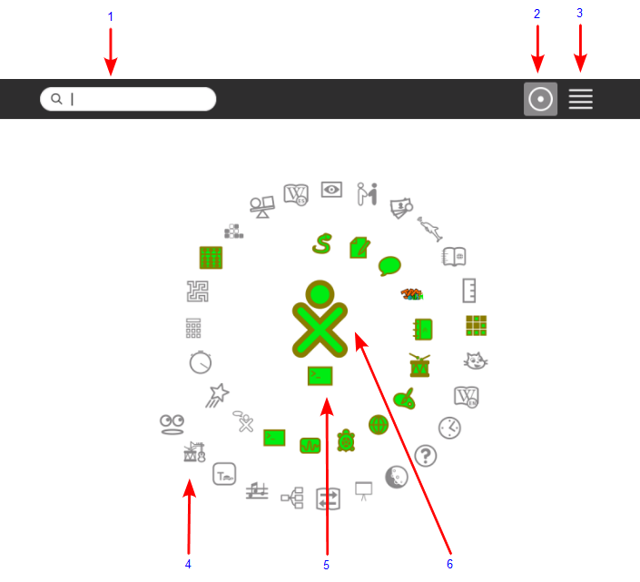
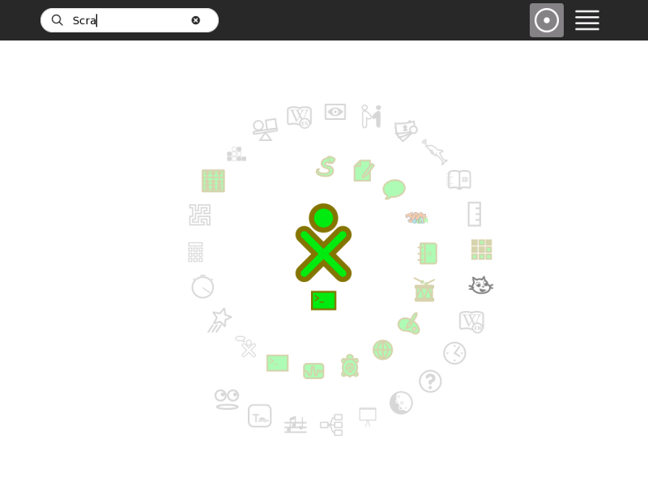
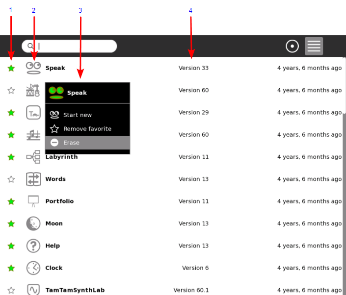
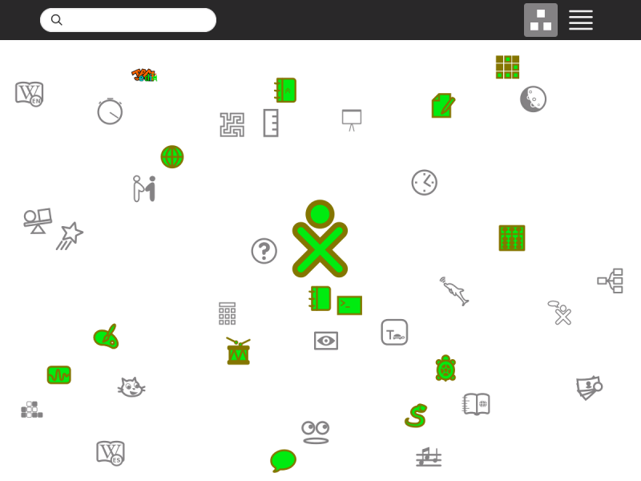

Home View¶
Use the Home View to begin new Activities.
Note: When you have clicked on an Activity’s icon, please wait for that Activity to start. If you get impatient and happen to click again on the Activity’s icon, you may end up with that Activity being started twice. When you click on an Activity’s icon, you will see a start-up view while that Activity initializes. Once the Activity is running, you will be placed into its Activity View. If the Activity fails to start, you will instead be returned to Home View.
To get to the Home View, click the Home icon on the Frame or press the F3 key.
The Home View has several modes. Each mode has a different arrangement of Activities:
Your favorite Activities in a ring (Ring mode)
Your installed Activities in a list (List view)
Your favorite Activities arranged freeform (Freeform mode)
Favorites View¶

Search box: Use the search box to find Activities. Note: If in List view you see fewer Activities than expected, you may need to click on the small X at the right end of the search box to undo an unintended search request.
Favorites modes: Click an icon to switch to a different view. Hover over the Favorites icon to see a menu that lets you pick Ring mode or Freeform mode.
List view: Click the icon to switch over to the List view.
Activity icon: Click an Activity icon to launch that Activity. Its icon is colored if the Activity has been used before and clicking on it will resume its last session. (Please see the Activity Menu section below for further information.) Only Activities that have been “starred” as favorites in the List View appear in this view.
Active Activity icon: The icon of the currently active Activity appears under the XO icon.
XO icon: Hover the pointer over the “XO” in the center of the Home View to bring up a menu and to access the Sugar Control Panel (Please see the chapter on Customizing Sugar).

When a search is done the Activities which don’t correspond to the result are greyed out. If only one Activity matches the search, the full name will replace what has been typed, and pressing enter will launch the Activity.
List View¶

Use the List view to manage all of your Activities and to choose which Activity icons will appear on the Favorites view.
Activity favorite icon: A star, which is colored for favorite Activities, which appear in the Ring mode or Freeform mode. Click a star to color or clear it.
Activity icon: Click the icon to launch the Activity or hover over it to see the corresponding menu.
Hover menu: In this menu you can also launch, favorite and un-favorite Activities and erase them.
Version number: Here you can see which version of the Activity is currently installed. For more information about updating your Activities to the latest version please refer to the How to Install and Update Activities section.
Favorites View in Freeform Mode¶

The Freeform mode of the Home View works the same as the Ring mode, but the icons are arranged arbitrarily instead of in a circle. You can drag the icons in this View to visually group them in a way that makes sense to you.